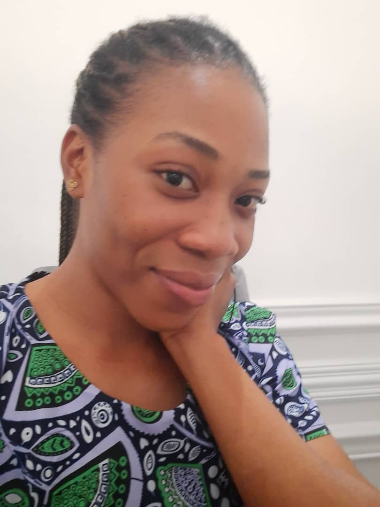

Get to Know Me
About Me
A little about my background, education, interests and journey into technology.
Who Am I?
Hello! I'm Ogechi Mirabel, a Software Engineering undergraduate at Miva Open University. I have a growing interest in technology and how it can be used to solve everyday problems. My curiosity about digital solutions and the continuous advancement of technology inspired my decision to pursue Software Engineering.
I enjoy learning new things, exploring creative ideas and challenging myself to develop new skills. As I continue my academic journey, I am focused on building a strong foundation in programming, software development and problem-solving.

Educational Background
My academic journey is helping me develop the knowledge and skills needed for a career in technology.
| Institution | Programme | Status |
|---|---|---|
| Miva Open University | Software Engineering | Undergraduate |
Career Aspirations
My goal is to become a skilled software engineering professional capable of creating useful, reliable and innovative digital solutions. I am currently exploring different areas of software development to discover where my interests and strengths align. I look forward to gaining practical experience, working on meaningful projects and continuously improving my technical abilities.
My Technical Skills
These are some of the technologies and programming languages I am learning and developing my skills in.
HTML5
Learning web page structure and content.
CSS3
Learning website styling and responsive design.
JavaScript
Learning programming and website interactivity.
Python
Learning programming fundamentals and logic.
Hobbies & Interests
Outside my academic activities, I enjoy activities that allow me to express myself, explore new ideas and learn different things.
- Exploring new places and having adventures.
- Learning about technology and innovation.
- Creative projects and artistic expression.
- Discovering new ideas and developing new skills.